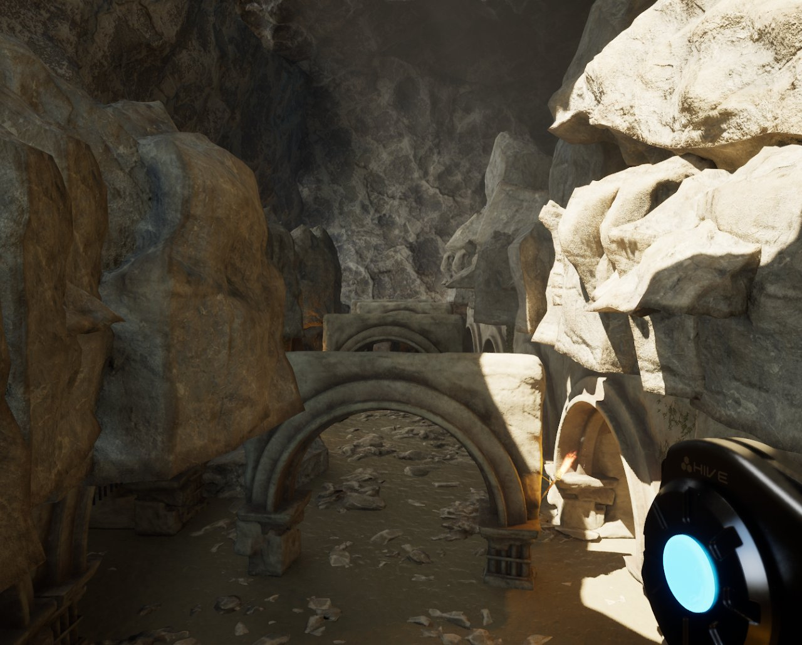
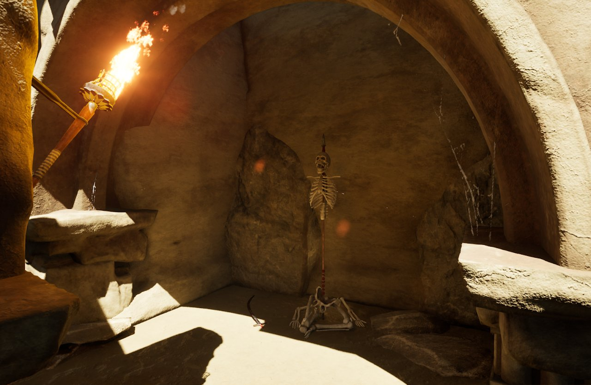
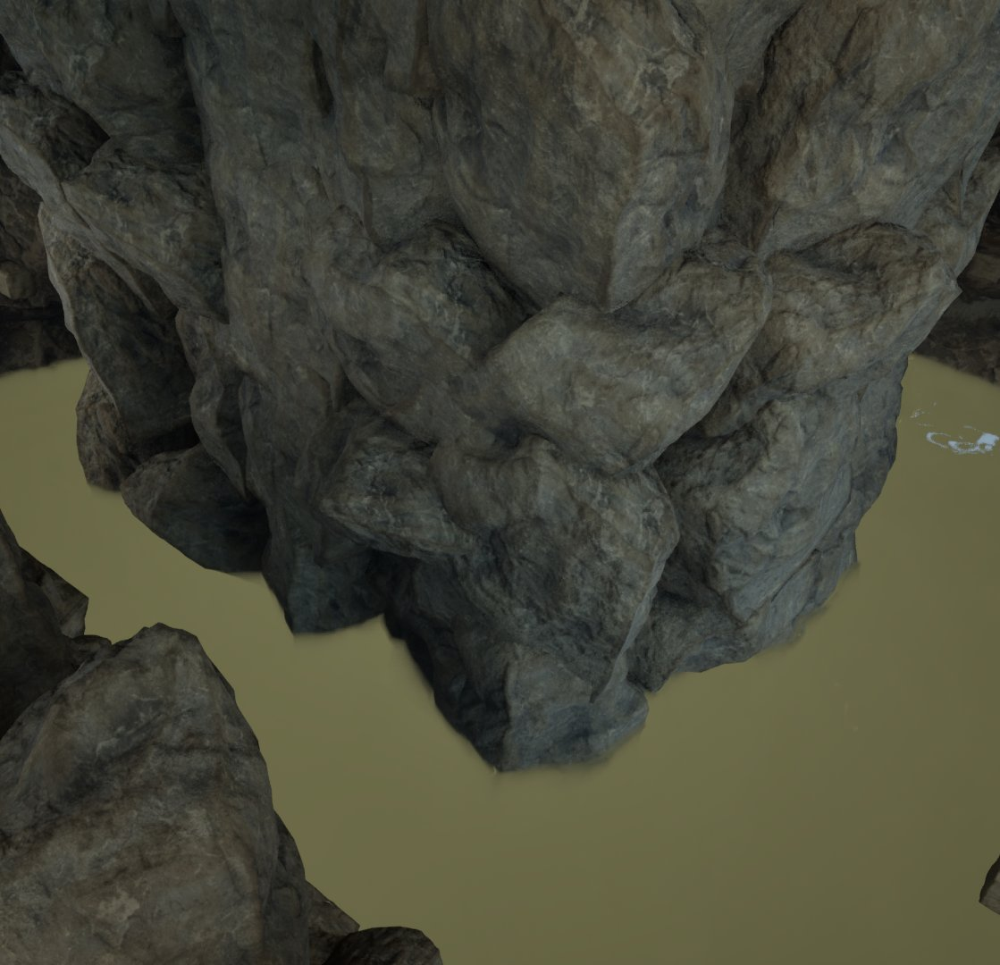
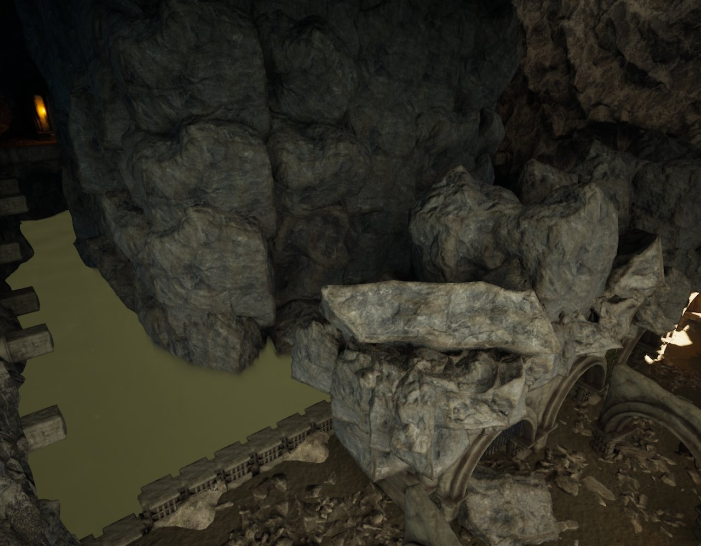

Time Heist
Overview
Time Heist is a short first-person experience I built. It takes place in a ruined, tide-swallowed city. You use teleportation and a time-based weapon to navigate vertical, non-linear spaces. As you progress, the water lowers and unlocks new paths.
My Role
- I designed the post-apocalyptic level layouts.
- I programmed the teleportation mechanics and the time-based weapon.
- I integrated over 30 assets into the project.
- I built fluid FPS movement.
- I optimized the game for performance.
Level Design
I wanted players to make decisions and pick the best path through the level: aim high to avoid conflict, or time the blaster's cooldown to clear enemies. Teleporting is built into key sections, and the start of the level teaches the mechanics.
Environmental Mechanics
The water works as a barrier that stops you from falling and guides your progress. When you reach a certain area, it lowers and opens new paths. I built the space vertically so you look up for teleport points, which makes it feel exploratory instead of linear.
Reflection
I enjoyed owning every design decision on a solo pipeline. I want to revisit and update this project in the future.
Gallery



